Harfler
Yirmi dokuz harfi şekli ve sesiyle tanı. Başta, ortada ve sonda yazılış şekillerini öğren.
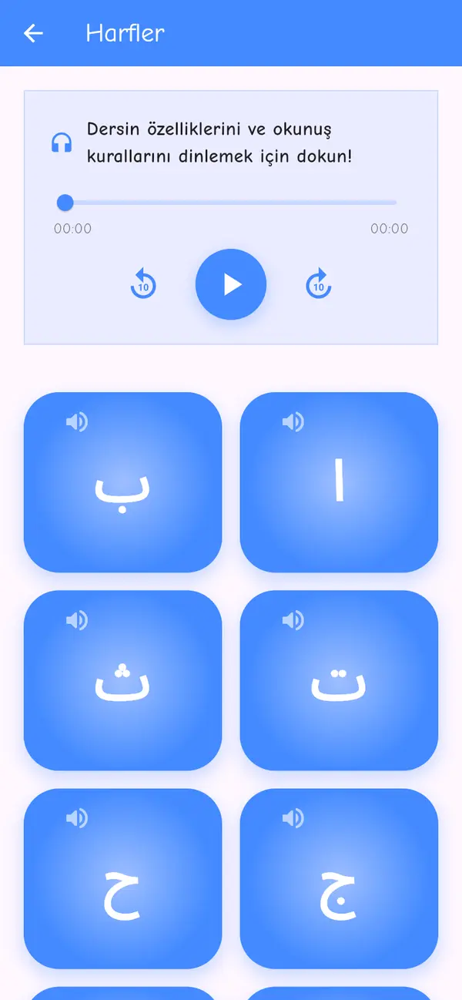
Ücretsiz · Tarayıcıda, telefonda, tablette ve akıllı tahtada
Kur'an Öğretmenim; elifbadan tecvide uzanan sesli dersleri, 114 sûrelik sesli Kur'ân-ı Kerîm okuyucusunu, namaz dualarını, tecvid kurallarını ve öğretici oyunları bir araya getirir. Hiçbir şey kurmadan tarayıcıda açılır; uygulama da aynı içeriği telefona taşır.
Kurulum yok
Bütün içerik ayrı sayfalar hâlinde tarayıcıda çalışır; sesler ilk dinlendiğinde cihazda kalır, kaldığınız yer ve sonuçlarınız saklanır.
Dokun ve dinle
Aşağıdaki harflere dokunun; her harfin okunuşu, uygulamadaki ses kaydıyla çalınır. Elifba sağdan sola okunur: ilk harf Elif, en sağdadır.
Bir harfe dokunun; sesi hemen çalınır.
Ders sırası
Dersler, Kur'ân kurslarında uygulanan elifba sırasını izler. Her adım bir öncekinin üzerine kurulur; hiçbir konu sessiz geçilmez. On altı dersin tamamını sesli kartlarıyla görün.
Yirmi dokuz harfi şekli ve sesiyle tanı. Başta, ortada ve sonda yazılış şekillerini öğren.

Üstün, esre ve ötre; tenvin, cezm ve şedde. Her hareke, kelime örnekleri ve sesiyle.
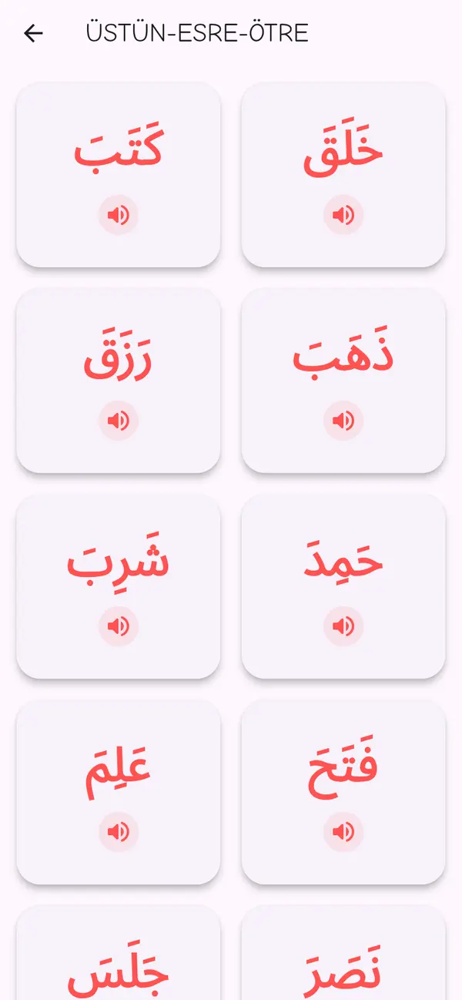
Üç, dört ve beş harfli kelimeler; med harfleri, lafzatullah ve zamir. Yedi alıştırma kategorisi.
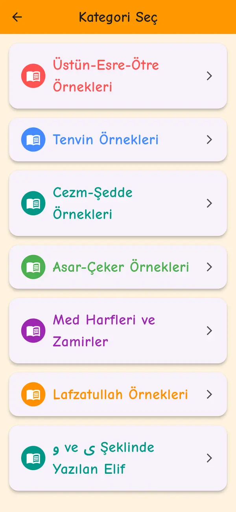
Fâtiha'dan başlayarak 604 sayfa. Dört bölümlük tecvid dersiyle doğru ve güzel okuyuş.
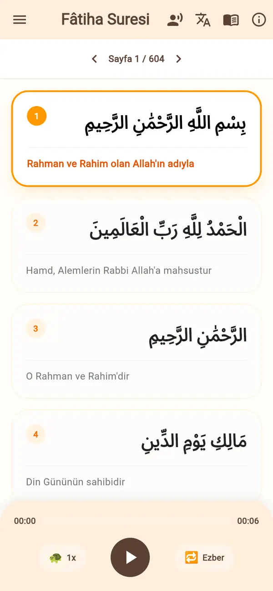
Uygulamanın içinde
Ana ekrandaki her kart ayrı bir çalışma alanı açar. Aşağıdaki görüntüler uygulamanın kendisinden alınmıştır.
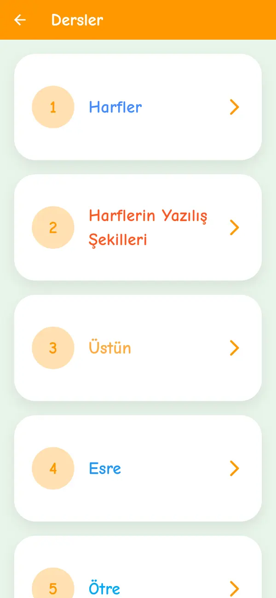
Harflerden cezm ve şeddeye sıralı dersler; her birinde sesli anlatım ve dokun-dinle kartları.
Hareke, tenvin, cezm-şedde, med harfleri, lafzatullah ve elif çeşitleri için sesli kelime kartları.
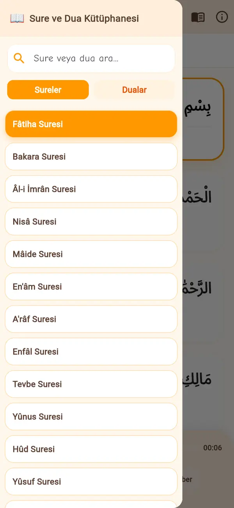
114 sûre, 604 sayfa, üç meâl; namaz sûreleri ve duaları sesli, hız ayarlı ve ezber tekrar modlu.
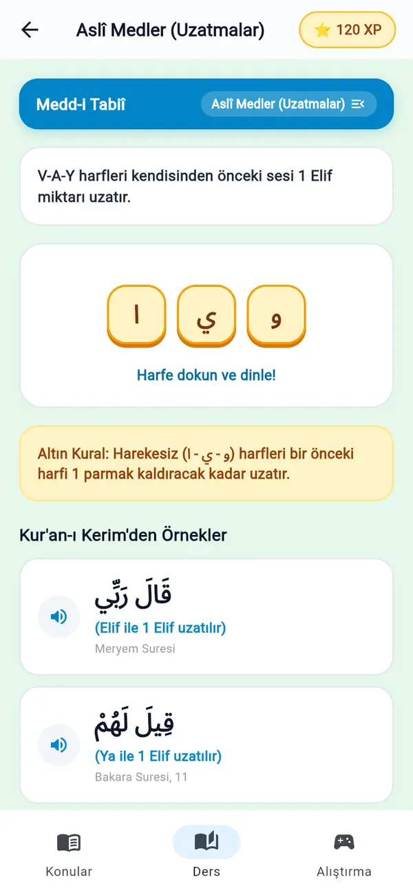
Dört bölümde kural, altın kural, Kur'ân-ı Kerîm'den sesli örnek ve sürükle-bırak alıştırması; puanla ilerle.
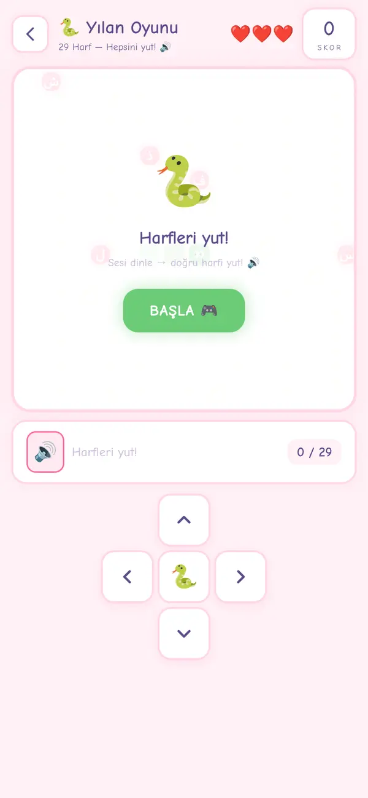
Balon patlatmadan Arapça Tetris'e on iki oyun; hepsi sesle çalışır, hepsi harf ve kelime bilgisini pekiştirir.
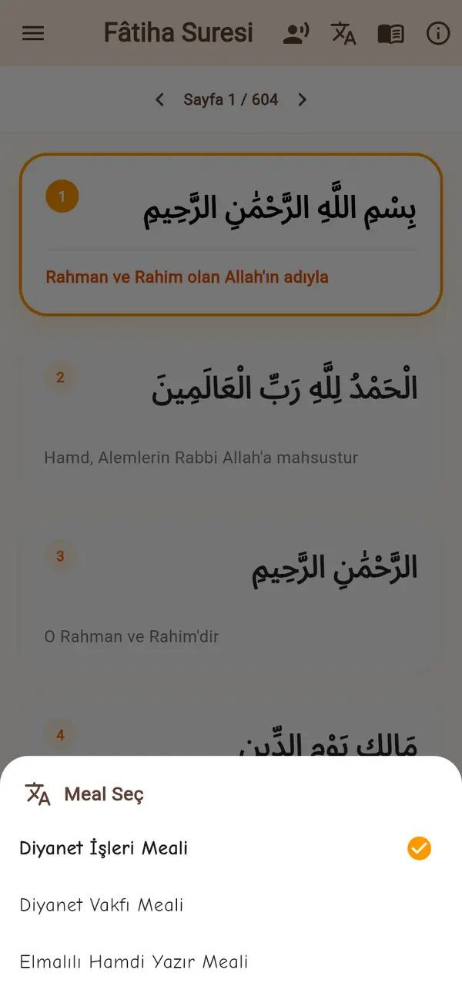
Her âyet-i kerîmenin altında seçtiğiniz meâl; dinlerken okunan âyet vurgulanır, yavaş çalma ve tekrar seçeneği.
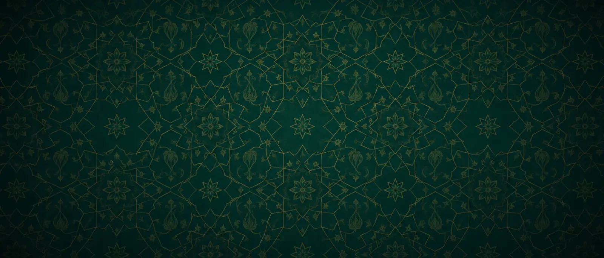
Tanıtım
Harf dersinden sûre okumaya, tecvid alıştırmasından yılan oyununa kısa bir tur. Bir bölüme atlamak için aşağıdaki başlıklara dokunun.
Oynayarak öğren
Her oyun sesle başlar. Çocuk duyduğu harfi balonda, köstebekte, yılanın yolunda arar; puan toplar, yıldız kazanır, aynı harfi fark etmeden on kez tekrar eder.
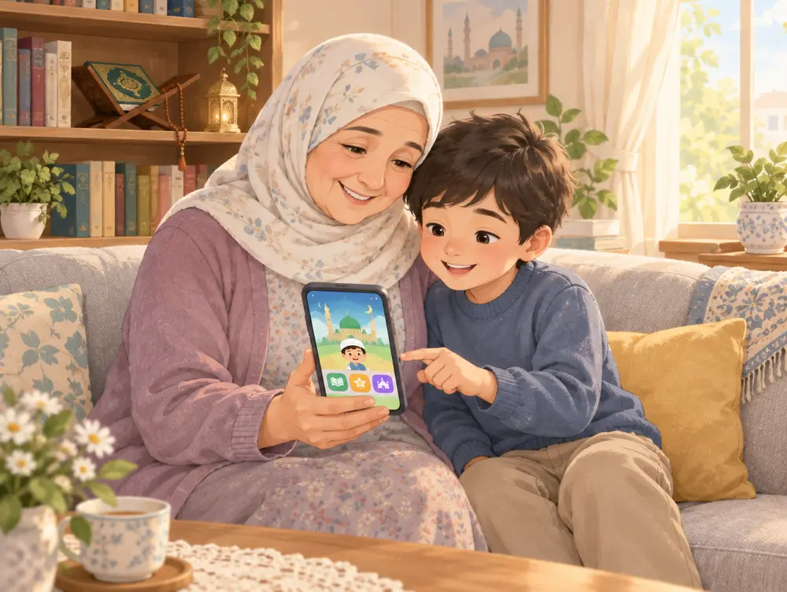
Sûre ve dua kütüphanesi
Kur'ân-ı Kerîm'in tamamı Medine Mushafı sayfa düzeniyle. Dinlerken okunan âyet-i kerîme vurgulanır; hız yavaşlatılır, ezber için tekrar açılır. Namaz sûreleri ve duaları ayrı bir sekmede.
بِسْمِ اللَّهِ الرَّحْمَٰنِ الرَّحِيمِ
Rahmân ve Rahîm olan Allah'ın adıyla.
Fâtiha Sûresi, 1. âyet-i kerîme · Diyanet İşleri Meâli
Tecvid bilgisi
Her bölümde önce kural, sonra "altın kural" denilen tek cümlelik hatırlatma, ardından Kur'ân-ı Kerîm'den sesli örnekler ve sürükle-bırak alıştırması. Bitirdikçe puan toplanır.
Elif, vav ve ya ile beş farklı uzatma kuralı; Medd-i Tabiî, Muttasıl, Munfasıl.
İhfa, izhar, iklab ve idgamlar; dudak ihfası dâhil.
Kalkale, sâkin mîm, ikiz harfler (idgam-ı misleyn).
Râ harfinin kalın-ince okunuşu, Allah lafzı, uzatılan zamir.
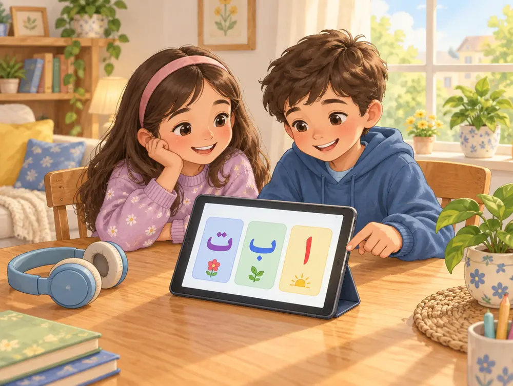
Kimler için
Uygulama tek başına çalışılabilecek kadar sade; bir hocanın yanında kullanılacak kadar düzenli.
Büyük harfler, kısa dersler, her dokunuşta ses. Oyunlar ders bitince ödül gibi açılır.
Çocuğunuzla birlikte dinleyin; harf sırası ve kurallar sizi de yıllar sonra yeniden başlatır.
Akıllı tahta için Sınıf Modu: dev harf kartları, dokun-dinle, sırayla okutma. Ödev olarak sûre sayfası ve alıştırma kategorisi verin.
Sık sorulanlar
Evet. Kayıt ve üyelik gerektirmez; tarayıcıdan açılır. Telefonda "Ana ekrana ekle" seçeneğiyle uygulama gibi kurulur ve tam ekran çalışır.
Okuma yazma bilen çocuklardan itibaren herkes için. Dersler çocuklara göre sade tutulmuştur; yetişkin yeni başlayanlar da aynı sırayı izleyerek ilerler.
Hepsinde. Tek adres: kuranogretmenim.com. Sesli dersler için cihazın sesi açık olmalıdır.
Metin Tanzil projesinden alınmış, Medine Mushafı sayfa düzeniyle (604 sayfa) yerleştirilmiştir. Meâller: Diyanet İşleri, Diyanet Vakfı ve Elmalılı Hamdi Yazır.
Tecvid puanları ve oyun skorları kullandığınız cihazda saklanır. Hesap açmanız gerekmez. Cihaz değiştirince ilerleme taşınmaz.
Uygulamada Ayarlar > Görüş ve Öneri bölümünden ya da Instagram'daki @kuranogretmeniim hesabından yazabilirsiniz.
Kurulum yok, kayıt yok. Bağlantıya dokunun, Elif ile başlayın.
Uygulamayı Aç